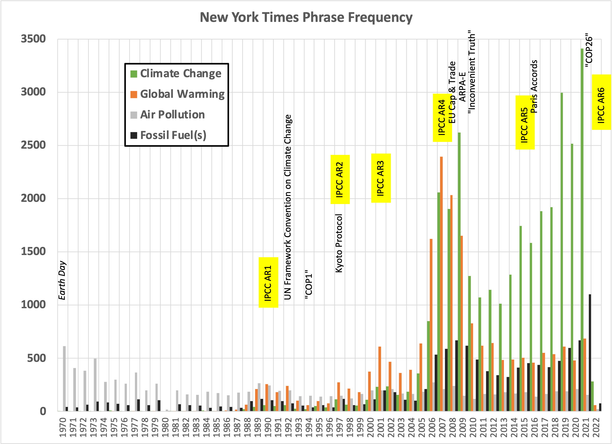
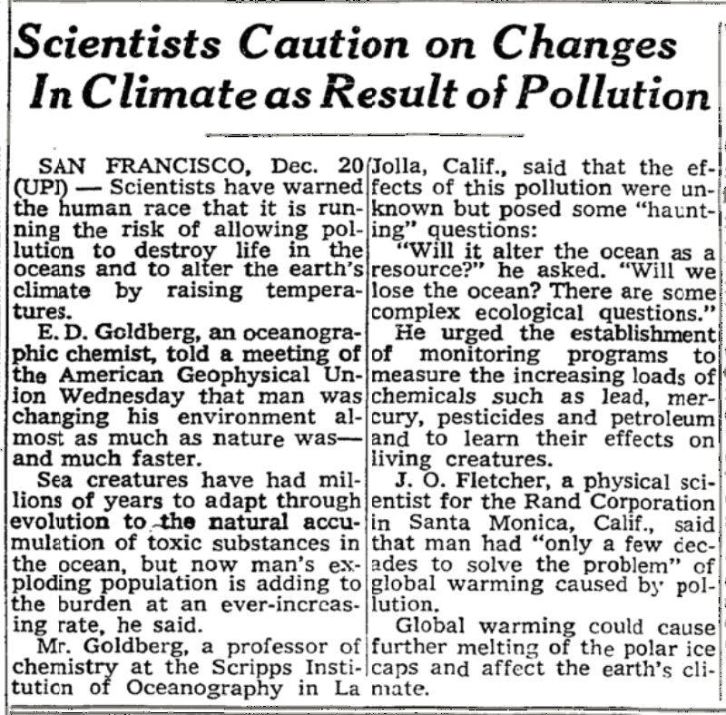
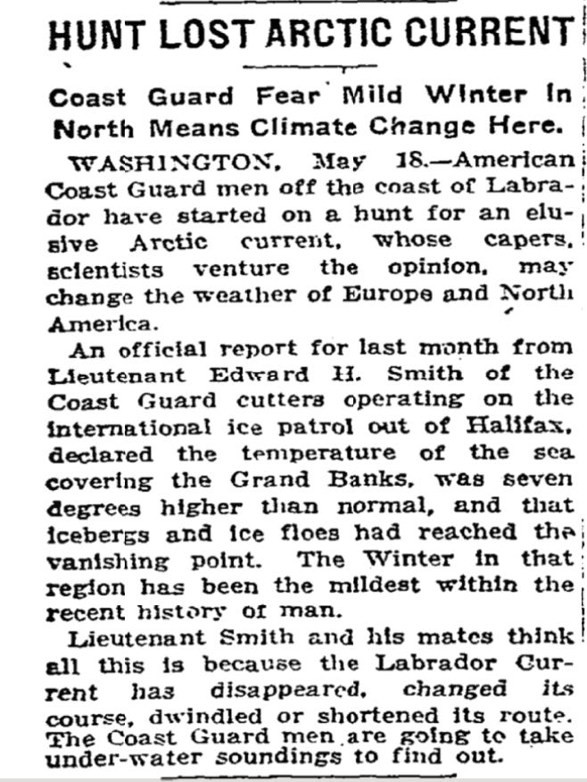
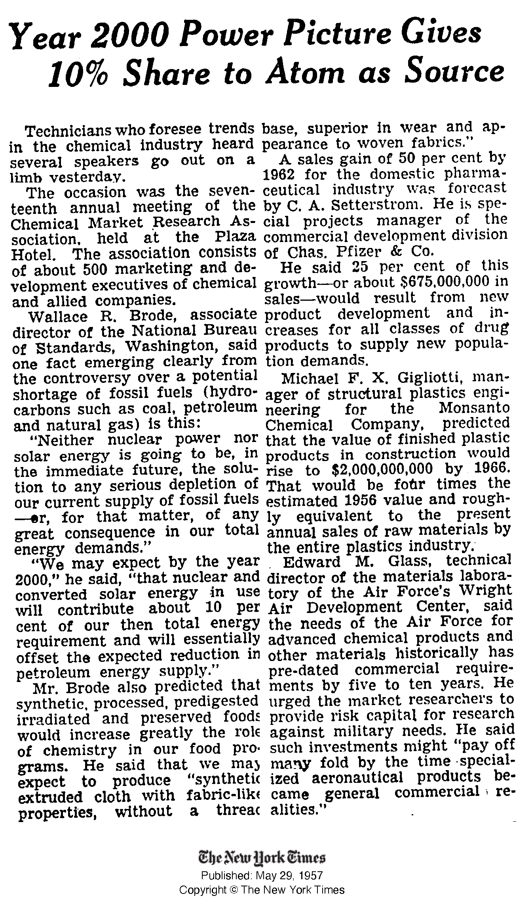
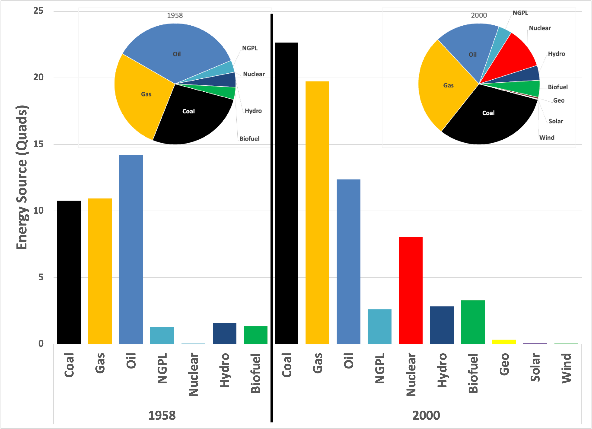

You can read Healing for free, and you can reach me directly by replying to this email. If someone forwarded you this email, they’re asking you to sign up. You can do that below.
If you really want to help spread the word, then pay for the otherwise free subscription. I use any money I collect to increase readership through Facebook and LinkedIn ads.
Thank you for reading Healing the Earth with Technology. This post is public so feel free to share it.
Today’s opening quote:
Philosopher Richard Rorty in about 1991, by the New Yorker’s Steve Pyke
“The world does not speak. Only we do. The world can, once we have programmed ourselves with a language, cause us to hold beliefs. But it cannot propose a language for us to speak. Only other human beings can do that. The realization that the world does not tell us what language games to play should not, however, lead us to say that a decision about which to play is arbitrary, nor to say that it is the expression of something deep within us. The moral is not that objective criteria for choice of vocabulary are to be replaced with subjective criteria, reason with will or feeling. It is rather that the notions of criteria and choice (including that of “arbitrary” choice) are no longer in point when it comes to changes from one language game to another. Europe did not decide to accept the idiom of Romantic poetry, or of socialist politics, or of Galilean mechanics. That sort of shift was no more an actor of will than it was a result of argument. Rather, Europe gradually lost the habit of using certain words and gradually acquired the habit of using others.” Richard Rorty, “The Contingency of Language” in Contingency, Irony, & Solidarity (1989)
This quote aims to re-emphasize the distinction between Science and scientists, God and religion, Truth and knowledge. It’s worth re-reading the passage until you get that gist. His point is that words necessarily constrain our imagination. Once a concept, however accurate, is written down, it is irrevocably limited. The essential core of human language is to communicate acquired knowledge. But by turning a thought into words, we affix the idea (and related ideas) with verbal baggage.
Today’s read: 6 minutes.
With the last issue, I realized that journalists and some scientists could blame pretty much any random catastrophe (not just California’s drought) on climate change. Indeed, the weather has a panoply of consequences, and average global temperature (in other words, global warming) is an unavoidable factor in everything, so it’s easy to connect the two. But the cause-effect connection is becoming hackneyed and inane. Fortunately, others have investigated the satire aspect for me, for both “climate change” (Investors Business Daily) and “global warming” (Heritage Foundation).
The primary point of this rag is to focus attention on solutions rather than causes, in other words, “fixing the problem” rather than “fixing the blame”. It doesn’t matter how or who made the mess. It’s up to all of us to clean it up. It’s time to stop blaming others for (or feeling guilty about) the predicament. Instead, we must act proactively with the interests of humanity in mind.
Based on Rorty’s philosophical angle, I decided to do a little data collection for a few terms to see how human habits of vernacular have changed. As I’ve pointed out in earlier issues, from a purely scientific perspective, “global warming” (an observed fact) leads to “climate change” (a vaguely nonspecific outcome). But they seem to be used interchangeably, usually in an ominous, foreboding context. [Reiterating my perspective: True climate change hasn’t happened yet—the changes we observe follow from global warming. If the climate(s) do change, there will be no debate, but also no recourse.]
So what do we see?

Yearly count of articles in the New York Times online search engine that contain the exact listed phrase, from 1970-2022. For “Fossil Fuel(s),” the singular and plural forms were both searched and then added together, potentially leading to double counting. I chose the highlights to track the geopolitical context.
Interestingly, the phrase “climate change” dominates today but did not overtake “global warming” until 2009, even though the first UN conference included the term. Also, the phrase “air pollution” (which was a huge motivation for the first Earth Day) is waning in popularity, even though it is the only phrase that humans experience directly.
I thought it’d be interesting to look at the earliest occurrence of each phrase:
Global Warming (1969)

The earliest New York Times article to use the phrase “global warming”; was December 20, 1969. Prof. Goldberg was trained by Harrison Brown, the postdoctoral advisor for Dave Keeling.
Goldberg retreats to a scientific “safe space” by implying that “more work is needed” because “interesting questions remain”. At the same time, Fletcher of RAND Corporation (a government research non-profit with ties to DOD) lays it out more starkly, blaming warming on nonspecific “pollution”.
Climate Change (1924)

Earliest New York Times article to mention “climate change”. May 19, 1924. Lt. Smith went on to become an Admiral known as “Iceberg” Smith.
Presciently, Smith recognized the capability of ocean currents to affect climates. He was able to undertake these missions because of the sinking of the Titanic in 1912, which alerted navies (and their patrons) to the danger of icebergs. [He ended up finding the current.] That’s the way of science, which usually doesn’t begin with “Eureka!” but rather “That’s odd….”
Fossil Fuels (1957)

In modern hindsight, this short article is fascinating. How times have changed! Pfizer grew sales by 50% based on existing products rather than introducing new vaccines, Monsanto was still making plastics, and the Chemical Market Research Association featured a presentation from the National Bureau of Standards! The last one was worth investigating. But I find myself asking, “How accurate was Dr. Brode’s prediction?” We can check it:

Energy source comparison between 1958 and 2000, based on this report.
In 1957, Dr. Brode (a chemist, of course, and future recipient of the Priestley Medal) predicted that nuclear and solar energy would supply ‘only’ 10% of our energy supply and offset losses in petroleum production. The actual result was that nuclear was 11%, offsetting much more than just a feared drop in oil. However, direct solar energy (along with other “renewables”) remains a minor contributor. Note that only oil production dropped slightly in absolute terms of our energy sources. Other energy sources expanded, and we added new energy sources.